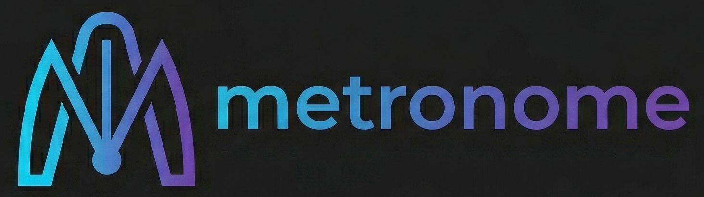

Brand Guidelines & Web3 Design Sheet
The design of The Metronome is born from the intersection of high-performance blockchain technology and financial discipline.
The palette combines the seriousness of dark mode with cyan, blue, and purple accents to guide user interaction.
Guarantees extreme legibility for financial data, wallet balances, and percentages.
Used for Titles, Buttons, and general UI.
AaBbCcEe
Aa Bb Cc Dd Ee Ff Gg 0123456789
Used for Numbers, Web3 Addresses, and Code.
AaBbCcEe
Aa Bb Cc Dd Ee Ff Gg 0123456789
How elements combine in The Metronome's interface.
This is a light gray paragraph. To learn how our strategy works, read the technical documentation here.
Note: Early cancellation penalties apply.